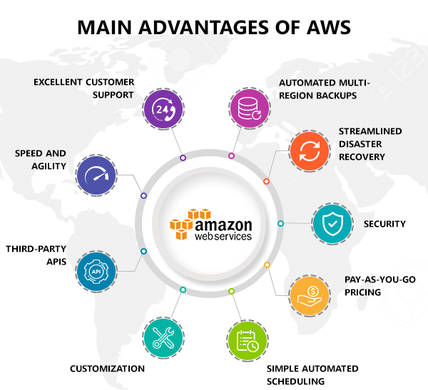
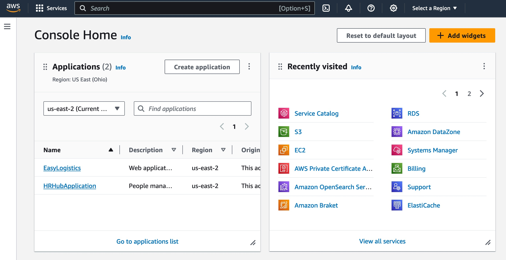
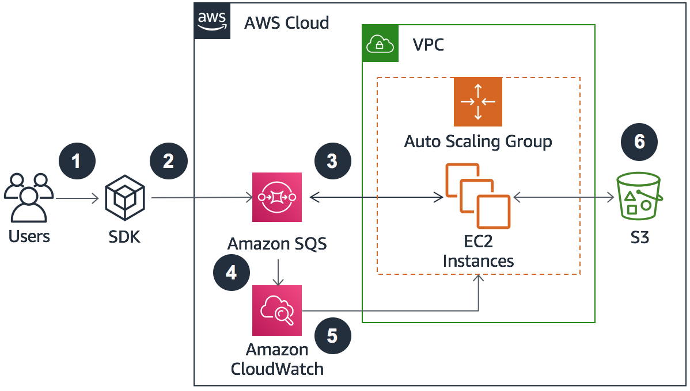
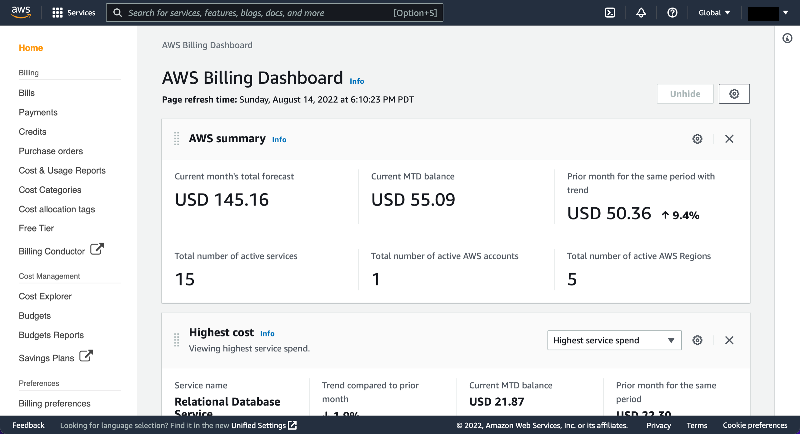

2. Vue d'ensemble d'AWS
2.1 Qu'est-ce qu'AWS ?
Amazon Web Services (AWS) est une plateforme de cloud computing qui offre un large éventail de services permettant aux entreprises de gérer des applications et des données de manière évolutive, sécurisée et sur demande. AWS permet de louer des ressources (par exemple, puissance de calcul, stockage, bases de données) au lieu d’acheter une infrastructure physique, ce qui facilite la flexibilité opérationnelle et réduit les coûts. Aujourd’hui, AWS est le leader mondial du cloud, utilisé dans des secteurs allant de la finance à la santé en passant par les technologies de l'information.

2.2 Principaux concepts de la gestion cloud avec AWS
Introduction au Cloud Computing
Le cloud computing est un modèle qui permet d'accéder à des ressources informatiques à la demande, sans la gestion directe d'infrastructures physiques. Cela offre des avantages tels que la scalabilité instantanée, la sécurité, et la possibilité d'économiser des coûts en ne payant que pour les ressources utilisées.
Vue d’ensemble des services AWS
AWS offre une large gamme de services, répartis dans plusieurs catégories :
- Calcul (EC2, Lambda) : pour héberger et exécuter des applications, des instances virtuelles et des fonctions sans serveur.
- Stockage (S3, EBS) : pour le stockage sécurisé des données avec de nombreuses options de résilience.
- Bases de données (RDS, DynamoDB) : pour la gestion de données structurées et non structurées.
- Réseau et contenu (VPC, CloudFront) : pour contrôler l’accès et distribuer du contenu efficacement et de manière sécurisée.
- Outils de gestion et surveillance (CloudWatch, CloudTrail) : pour surveiller et gérer l’activité des services AWS.

2.3 Principaux services AWS
Examinons certains des services AWS les plus utilisés, essentiels pour toute infrastructure cloud.
Calcul : Amazon EC2 et AWS Lambda
- Amazon EC2 (Elastic Compute Cloud) : Ce service permet de créer et gérer des instances (machines virtuelles) pour exécuter des applications. Il prend en charge une grande variété de types d’instances et offre une flexibilité inégalée dans la configuration des ressources.
- AWS Lambda : Ce service sans serveur permet d’exécuter du code en réponse à des événements sans avoir besoin de gérer des serveurs sous-jacents. Idéal pour les applications basées sur des événements, il fonctionne sur un modèle de facturation à l'utilisation, garantissant ainsi des coûts contrôlés.
Stockage : Amazon S3 et Amazon EBS
- Amazon S3 (Simple Storage Service) : Un service de stockage d'objets offrant une durabilité de 99,999999999% et la capacité de stocker une quantité illimitée de données. S3 est hautement disponible, sécurisé, et flexible, parfait pour la gestion des sauvegardes, de l’archivage, ou des données de big data.
- Amazon EBS (Elastic Block Store) : Conçu pour être utilisé avec EC2, EBS fournit des disques persistants que les instances peuvent monter comme stockage local. Idéal pour les applications qui nécessitent des performances élevées et une persistance des données.
Bases de données : Amazon RDS et Amazon DynamoDB
- Amazon RDS (Relational Database Service) : Un service géré pour les bases de données relationnelles comme MySQL, PostgreSQL, et Oracle, facilitant la mise en place, la maintenance et l’extensibilité des bases de données relationnelles.
- Amazon DynamoDB : Une base de données NoSQL entièrement gérée, conçue pour un stockage rapide et scalable de données non structurées, idéale pour les applications web et mobiles.

2.4 Gestion des ressources, sécurité et facturation dans AWS
Gestion des ressources
Avec AWS, la gestion des ressources est centralisée via la console AWS Management Console et l’API AWS CLI (Command Line Interface). Ces outils offrent une vue d'ensemble pour surveiller les ressources, gérer les configurations, et automatiser les tâches.
Sécurité et conformité
AWS propose des services de sécurité intégrés et rigoureux pour garantir la conformité aux normes industrielles :
- IAM (Identity and Access Management) : Permet la gestion des utilisateurs, des rôles et des autorisations, assurant un contrôle strict de l'accès aux ressources.
- AWS KMS (Key Management Service) : Permet de gérer les clés de chiffrement pour protéger les données stockées.
- CloudTrail : Enregistre les actions des utilisateurs et des services, offrant une piste d’audit essentielle pour la sécurité et la conformité.
Facturation et gestion des coûts
AWS propose des outils puissants pour suivre et optimiser les dépenses :
- AWS Billing : Un tableau de bord permettant de visualiser et de gérer les dépenses en temps réel.
- AWS Cost Explorer : Permet une analyse avancée des coûts pour identifier les tendances et optimiser les dépenses.
- Budgets AWS : Permet de définir des seuils de dépenses et de recevoir des alertes en cas de dépassement, pour une gestion proactive des coûts.
